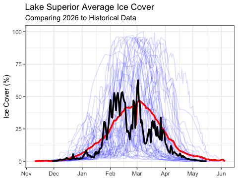
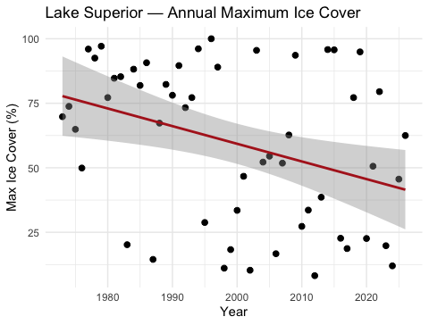

# Load packages at the top — always -------------------
library(tidyverse) # data manipulation + ggplot2
library(janitor) # clean_names() and friendsLecture 07 — Wide, Long, and Wild: Pivoting Real Data
Reshaping Lake Superior ice cover data with pivot_longer() and pivot_wider()
Where We Left Off (Lecture 06)
- Downloaded real data from inside R — NOAA’s
GSODRpackage, Duluth station - Raw vs. summarized data — daily data hides trends;
group_by() %>% summarize()reveals them - Reused
lm()to estimate a rate of change — °C per year, converted to °C per decade case_when()to build a new categorical variable — summer vs. winter- Compared two group-specific models — found winter warming faster than summer
Note
✅ Transition
- Duluth’s weather data came to us already tidy
- one row per day, one column per variable.
- Today’s dataset will not be tidy.
- We’ll learn how to fix that.
Goals for Today
- Download a genuinely messy, wide real-world dataset — Lake Superior daily ice cover
- Understand why wide data is hard for R (and great for humans)
- Learn
pivot_longer()— turn wide data into tidy long data - Learn
pivot_wider()— turn long data back into a human-readable summary table - Handle a tricky real-world wrinkle: winter seasons that cross the new year
- Recreate NOAA’s own “spaghetti plot” comparing every year of ice cover
- Ask: is Lake Superior’s maximum ice cover changing over time?
Tip
🖐 Try it yourself
By the end you’ll have reshaped real NOAA ice data and built the same kind of plot NOAA scientists publish.
Tools today:
tidyverse,janitor
Textbook:
- 📖 R4DS 2e — Hadley Wickham
- 📖 Data Carpentry — R for Ecologists
Meet the Data: Lake Superior Ice Cover
NOAA-GLERL (Great Lakes Environmental Research Laboratory) has tracked daily Great Lakes ice cover since 1973 — over 50 years of satellite-derived ice charts.
Today’s dataset: daily percent ice cover for Lake Superior, one row per day-of-winter, one column per year.
Source:
https://www.glerl.noaa.gov/data/ice/glicd/daily/sup.txt
Important
This is a plain text file living on a government server — not a tidy CSV. This is what real environmental data often looks like.

What Does “Wide” Data Look Like?
1973 1974 1975 ... 2024 2025
Nov-10 NA NA NA NA NA
Nov-11 NA NA NA NA NA
...
Jan-15 2.1 4.0 1.8 8.2 6.5
...- One row per calendar day-of-winter (Nov 10 → ~May)
- One column per year — 53 columns, one for each ice season since 1973
- Lots of
NA— many days simply had no ice that year or that month
This format is perfect for a human scanning a printed table. It’s terrible for R and ggplot.
Why this breaks tidy tools:
ggplot()wants one column to map tox, one toy- Here, “year” is hiding as 53 separate column names, not as data values
group_by(year)is impossible — there’s noyearcolumn to group by!
📖 R4DS Ch. 5.2 — “every value in its own cell”
Load Libraries and Read the Raw File
# Read the messy text file directly from the web -------
url <- "https://www.glerl.noaa.gov/data/ice/glicd/daily/sup.txt"
ice_raw <- read.table(
url,
header = TRUE,
na.strings = c("-999", "-99.00", "NA")
) %>%
rownames_to_column(var = "date") %>%
as_tibble()
head(ice_raw)# A tibble: 6 × 55
date X1973 X1974 X1975 X1976 X1977 X1978 X1979 X1980 X1981 X1982 X1983 X1984
<chr> <dbl> <dbl> <dbl> <dbl> <dbl> <dbl> <dbl> <dbl> <dbl> <dbl> <dbl> <dbl>
1 Nov-10 NA NA NA NA NA NA NA NA NA NA NA NA
2 Nov-11 NA NA NA NA NA NA NA NA NA NA NA NA
3 Nov-12 NA NA NA NA NA NA NA NA NA NA NA NA
4 Nov-13 NA NA NA NA NA NA NA NA NA NA NA NA
5 Nov-14 NA NA NA NA NA NA NA NA NA NA NA NA
6 Nov-15 NA NA NA NA NA NA NA NA NA NA NA NA
# ℹ 42 more variables: X1985 <dbl>, X1986 <dbl>, X1987 <dbl>, X1988 <dbl>,
# X1989 <dbl>, X1990 <dbl>, X1991 <dbl>, X1992 <dbl>, X1993 <dbl>,
# X1994 <dbl>, X1995 <dbl>, X1996 <dbl>, X1997 <dbl>, X1998 <dbl>,
# X1999 <dbl>, X2000 <dbl>, X2001 <dbl>, X2002 <dbl>, X2003 <dbl>,
# X2004 <dbl>, X2005 <dbl>, X2006 <dbl>, X2007 <dbl>, X2008 <dbl>,
# X2009 <dbl>, X2010 <dbl>, X2011 <dbl>, X2012 <dbl>, X2013 <dbl>,
# X2014 <dbl>, X2015 <dbl>, X2016 <dbl>, X2017 <dbl>, X2018 <dbl>, …What’s happening here:
read.table()(base R) handles this better thanread_csv()since the file isn’t comma-separatedna.stringstells R which placeholder values actually mean “missing”- The day-of-winter labels (
Nov-10,Nov-11…) were row names, not a real column —rownames_to_column()fixes that
Important
Look at the column names: X1973, X1974… R adds an X because column names can’t start with a number!
pivot_longer() — Collapsing Wide to Long
# Collapse all year columns into year + ice_cover ------
ice_long <- ice_raw %>%
pivot_longer(
cols = -date,
names_to = "year",
names_prefix = "X",
values_to = "ice_cover"
)
ice_long <- ice_long %>%
arrange(year, date)
head(ice_long)# A tibble: 6 × 3
date year ice_cover
<chr> <chr> <dbl>
1 Apr-01 1973 3
2 Apr-02 1973 2.7
3 Apr-03 1973 2.4
4 Apr-04 1973 2
5 Apr-05 1973 1.7
6 Apr-06 1973 1.4Reading the arguments:
cols = -date— pivot every column exceptdatenames_to = "year"— the old column names become values in a newyearcolumnnames_prefix = "X"— strip theXthat R glued onto the numbersvalues_to = "ice_cover"— the old cell values become a newice_covercolumn
📖 R4DS Ch. 5.3 — pivot_longer() for wide-to-long
Before and After: Same Data, Different Shape
Wide (ice_raw):
| date | X1973 | X1974 | X1975 |
|---|---|---|---|
| Nov-10 | NA | NA | NA |
| Jan-15 | 2.1 | 4.0 | 1.8 |
Long (ice_long):
| date | year | ice_cover |
|---|---|---|
| Jan-15 | 1973 | 2.1 |
| Jan-15 | 1974 | 4.0 |
| Jan-15 | 1975 | 1.8 |
Same information. Completely different shape.
- Wide: 53 columns, ~190 rows
- Long: 3 columns, ~190 × 53 rows
- The long version has one row per observation — exactly what
ggplot()andgroup_by()expect
Tip
This is the single most important reshaping skill in all of data science — almost every messy dataset needs this.
A Tricky Real-World Wrinkle: Winters Cross the New Year
The problem: an ice season runs Nov → May, but NOAA labels the whole season by the year winter ends in. So Nov-10 under column 1974 actually happened in November 1973.
# Assign Nov/Dec to the PREVIOUS calendar year ----------
ice_clean <- ice_long %>%
mutate(
year = as.numeric(year),
calendar_year = if_else(
str_starts(date, "Nov|Dec"),
year - 1,
year
),
full_date = ymd(paste(calendar_year, date, sep = "-")),
month = month(full_date, label = TRUE)
) %>%
drop_na(ice_cover, full_date)
head(ice_clean)# A tibble: 6 × 6
date year ice_cover calendar_year full_date month
<chr> <dbl> <dbl> <dbl> <date> <ord>
1 Apr-01 1973 3 1973 1973-04-01 Apr
2 Apr-02 1973 2.7 1973 1973-04-02 Apr
3 Apr-03 1973 2.4 1973 1973-04-03 Apr
4 Apr-04 1973 2 1973 1973-04-04 Apr
5 Apr-05 1973 1.7 1973 1973-04-05 Apr
6 Apr-06 1973 1.4 1973 1973-04-06 Apr Reading the logic:
str_starts(date, "Nov|Dec")— does this row’s day-of-winter text start with “Nov” or “Dec”?- If yes, subtract 1 from
yearto get the real calendar year ymd()(fromlubridate) glues the pieces into one real RDatedrop_na()removes rows with no real date or no ice reading
📖 R4DS Ch. 17 — working with dates and times
Summarize Now That We’re Long
# Mean ice cover per year-month --------------------------
monthly_avg <- ice_clean %>%
group_by(year, month) %>%
summarize(
mean_ice = mean(ice_cover, na.rm = TRUE),
.groups = "drop"
)
monthly_avg <- monthly_avg %>%
mutate(month_date = ymd(paste(year, month, "01", sep = "-")))
head(monthly_avg)# A tibble: 6 × 4
year month mean_ice month_date
<dbl> <ord> <dbl> <date>
1 1973 Jan 18.1 1973-01-01
2 1973 Feb 32.8 1973-02-01
3 1973 Mar 28.2 1973-03-01
4 1973 Apr 2.2 1973-04-01
5 1973 Dec 12.0 1973-12-01
6 1974 Jan 24.1 1974-01-01This should look familiar.
- Exactly the same
group_by() %>% summarize()pattern from Lecture 06’s Duluth weather data - We could not have written this on the wide data — there was no
yearormonthcolumn to group by until we pivoted
The reshape wasn’t just cosmetic — it unlocked every tidyverse tool we already know.
pivot_wider() — Going Back the Other Direction
# Turn long data into a year-by-month summary table ------
ice_pivot_table <- ice_clean %>%
pivot_wider(
id_cols = year,
names_from = month,
values_from = ice_cover,
values_fn = mean
)
print(ice_pivot_table)# A tibble: 54 × 9
year Apr Dec Feb Jan Mar May Nov Jun
<dbl> <dbl> <dbl> <dbl> <dbl> <dbl> <dbl> <dbl> <dbl>
1 1973 2.2 12.0 32.8 18.1 28.2 NA NA NA
2 1974 23.9 8.4 58.4 24.1 64.0 3.3 NA NA
3 1975 8.70 NA 35.9 10.7 17.2 NA NA NA
4 1976 6.52 5.48 27.8 15.4 32.3 NA NA NA
5 1977 24.2 19.1 92.0 61.1 78.0 2.15 NA NA
6 1978 9.67 5.98 55.4 17.3 63.7 2.57 NA NA
7 1979 48.5 3.31 85.4 36.8 87.6 21.3 NA NA
8 1980 15.6 NA 58.8 8.95 41.9 NA NA NA
9 1981 11.7 14.2 74.5 30.7 41.3 NA NA NA
10 1982 14.5 1.91 66.5 25.2 54.1 2.5 NA NA
# ℹ 44 more rowspivot_wider() is the mirror image of pivot_longer():
id_cols = year— one row per yearnames_from = month— month values become new column headersvalues_from = ice_cover— fills the cellsvalues_fn = mean— averages if multiple days land in the same year-month cell
This recreates an Excel-style pivot table — but computed, not copy-pasted.
📖 R4DS Ch. 5.4 — pivot_wider()
Why Learn Both Directions?
| Direction | When to use it |
|---|---|
pivot_longer() |
Data arrives wide (one column per year/site/etc.) and you need it tidy for ggplot() or group_by() |
pivot_wider() |
You have tidy long data but need a human-readable summary table — for a report, a colleague, or Excel |
Real data rarely arrives tidy. Spreadsheets from agencies, field data sheets, and government text files are almost always shaped for human eyes, not for R.
Important
You will use pivot_longer() constantly in your own research. This is one of the most-used functions in the entire tidyverse.
NOAA’s Own “Spaghetti Plot”
NOAA publishes a live version of this exact plot every winter, comparing the current year (black), the historical average (red), and every past year (thin blue lines):

Today, we’ll build our own version of this plot from the raw data we just tidied.
Why “spaghetti plot”?
- Dozens of thin overlapping lines look like noodles
- Each line is one year’s entire ice season, Nov → May
- The pattern that emerges — or doesn’t — tells the real climate story
This is a great example of how the same chart type appears in real published science.
Build the Spaghetti Plot
ice_spaghetti_plot <- ggplot() +
geom_line(
data = past_years,
aes(x = plot_date, y = ice_cover, group = year),
color = "blue", alpha = 0.15
) +
geom_line(
data = historical_avg,
aes(x = plot_date, y = avg_ice),
color = "red", linewidth = 1.2
) +
geom_line(
data = current_year_data,
aes(x = plot_date, y = ice_cover),
color = "black", linewidth = 1.2
) +
scale_x_date(date_labels = "%b", date_breaks = "1 month") +
labs(
title = "Lake Superior Average Ice Cover",
subtitle = paste("Comparing", current_yr, "to Historical Data"),
x = NULL, y = "Ice Cover (%)"
) +
theme_bw()
ice_spaghetti_plot
Three layers, three geom_line() calls:
- Thin, transparent blue lines — every past year, faded so patterns (not individual years) stand out
- Thick red line — the 50+ year historical average
- Thick black line — this year, drawn last so it’s on top
Compare your version to NOAA’s published plot — did we recreate it?
A New Question: Is Maximum Ice Cover Changing?
So far: we’ve visualized the shape of each ice season.
New question: has the peak (maximum) ice cover of each winter changed over the last 50 years?
# Find the single highest ice-cover day each year --------
max_ice_per_year <- ice_clean %>%
group_by(year) %>%
slice_max(order_by = ice_cover, n = 1, with_ties = FALSE)
head(max_ice_per_year %>% arrange(ice_cover))# A tibble: 6 × 6
# Groups: year [6]
date year ice_cover calendar_year full_date month
<chr> <dbl> <dbl> <dbl> <date> <ord>
1 Jan-22 2012 8.2 2012 2012-01-22 Jan
2 Mar-17 2002 10.3 2002 2002-03-17 Mar
3 Jan-16 1998 11.1 1998 1998-01-16 Jan
4 Feb-19 2024 12 2024 2024-02-19 Feb
5 Jan-25 1987 14.5 1987 1987-01-25 Jan
6 Mar-02 2006 16.7 2006 2006-03-02 Mar slice_max() keeps only the single row with the highest value in each group — here, one row per year: the date and value of that winter’s ice peak.
This also gives us the “ice-on/ice-off” story:
- The date of each year’s maximum is itself meaningful — an early peak (Jan) vs. a late peak (Mar/Apr) tells you something about how long the ice season lasted
- 1998’s max ice cover was only ~11%, on Jan 16 — a nearly ice-free winter
- 1979’s max was ~97%, on Feb 25 — almost total coverage
Model the Trend in Maximum Ice Cover
# Fit a regression: max ice cover by year -----------------
max_ice_model <- lm(ice_cover ~ year, data = max_ice_per_year)
summary(max_ice_model)
Call:
lm(formula = ice_cover ~ year, data = max_ice_per_year)
Residuals:
Min 1Q Median 3Q Max
-53.692 -24.810 3.811 20.982 48.599
Coefficients:
Estimate Std. Error t value Pr(>|t|)
(Intercept) 1427.4557 498.1910 2.865 0.00600 **
year -0.6841 0.2492 -2.746 0.00827 **
---
Signif. codes: 0 '***' 0.001 '**' 0.01 '*' 0.05 '.' 0.1 ' ' 1
Residual standard error: 28.54 on 52 degrees of freedom
Multiple R-squared: 0.1266, Adjusted R-squared: 0.1098
F-statistic: 7.539 on 1 and 52 DF, p-value: 0.008274max_ice_plot <- max_ice_per_year %>%
ggplot(aes(x = year, y = ice_cover)) +
geom_point(size = 2) +
geom_smooth(method = "lm", color = "firebrick") +
labs(
title = "Lake Superior — Annual Maximum Ice Cover",
x = "Year", y = "Max Ice Cover (%)"
) +
theme_minimal()
max_ice_plot
Same lm() syntax as Lecture 06 — only now X = year and Y = ice_cover (the yearly peak, not a daily or monthly mean).
- The slope tells us °C-equivalent: percentage points of max ice cover, per year
- Notice the huge year-to-year scatter — Great Lakes ice cover is famously variable, driven by short-term weather patterns like ENSO and the polar vortex, not just a steady climate trend
This is real data — the story is messier (and more honest) than a clean line.
What We Learned Today
Concepts:
- Real-world data is often wide — shaped for human eyes, not for R
pivot_longer()collapses many columns into key-value pairs — unlockinggroup_by(),summarize(), andggplot()pivot_wider()does the reverse — builds a readable summary table from tidy data- Seasonal data that crosses the calendar year boundary needs careful date logic
slice_max()pulls out the single extreme value per group — useful for “ice-on/ice-off” type questions- The same
lm()workflow from Lecture 06 applies to any time-indexed variable, including a yearly maximum
R skills:
read.table()+rownames_to_column()for messy text filespivot_longer()/pivot_wider()str_starts(),if_else(),ymd(),update()for date wranglingslice_max(order_by = ..., n = 1)
References:
- 📖 R4DS Ch. 5 — Data tidying
- 📖 R4DS Ch. 17 — Dates and times
- 📖 Data Carpentry — R for Ecologists
Data source:
- NOAA-GLERL Great Lakes Ice Cover Database
glerl.noaa.gov/data/ice
Up next — Homework:
- Apply the same wide-to-long pivot workflow to a Great Lake of your choice
- Compare your lake’s maximum ice trend to Lake Superior’s